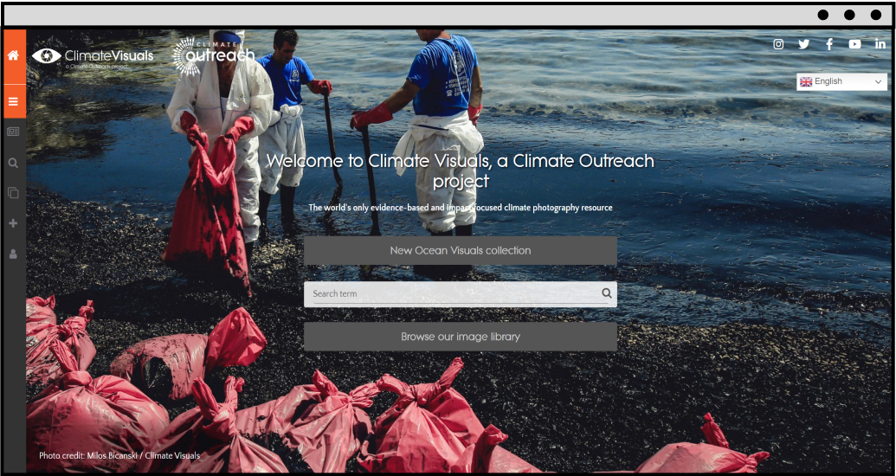

ClimateVisuals is an influential and evidential-based visual platform that shares reliable public climate images established on
various criteria, such as showing real people, telling the truth and new stories, etc. Nevertheless, Images are emotionally powerful that can guide the audience to be aware of climate change

ClimateVisuals advocated that online publishers use authentic local images to illustrate or disseminate the specific climate issues behind them. The images
from the this platform can be originated from the photo shooting location and the story behind the visuals

We used the reverse searching method (Tools: Tineye/Google lens) to track down the usage of climate images on various online platforms
And we found out there are sorts of articles or websites that may misuse (incorrectly use of image’s location) those climate images to the narrative
of some basic climate issues or situations for other countries
except their original location
except their original location
Australia→Morocco?


Following the reverse search outcomes, we picked the most commonly used 46 climate images in ClimateVisuals and collected them correctly and incorrectly using situations by various online publishers
We designed an interactive friendly Climate Images Location Map to visualise the using situations and the correct/
incorrect depictions of locations for every 46 images. You can use this map to explore the right/wrong using conditions behind the images
ENTER